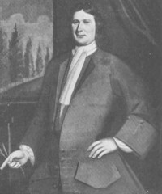

Johannes Van Vechten
According to traditional sources, Johannes Van Vechten was born in 1677. He was the son of Gerrit T. and Anna Jans Van Vechten of Rensselaerswyck.
 In March 1699, he married Albany native Maria Bogardus at the Albany Dutch church. By 1714, eight children had been christened in Albany where he had been a member since 1692.
These Van Vechtens first made their home in Albany's first ward where Johannes's property was accorded a moderate assessment. Perhaps they took over for Maria's father when he moved away from Albany a couple years after their marriage.
In 1715, he was identified as as sergeant in Johannes Schuyler's troop of horse.
In July 1708, Johannes expressed interest in buying a plantation in Schaghticoke. Perhaps he was the Johannes Van Vechten who was living in Rensselarswyck in 1720 or identified as a resident of Schaghticoke. In October 1741, this individual transferred all his lands at "Hoosic" to his three sons-in-law. Presumably, those lands were in the form of a leasehold.
Two individuals named Johannes Van Vechten were buried from the Albany church in 1734 and 1743. Both were interred in the burial plot located on Papskanee Island. Thus, this short-term city resident probably died after 1741.
Photograph of a portrait of Johannes Van Vechten said to have been painted by Pieter Vanderlyn in 1719. Reproduced online. Said to be in the collection of the Philadelphia Museum of Art. However, at least one source has identified the sitter as the other Johannes (1666-1734).
{kind=link}